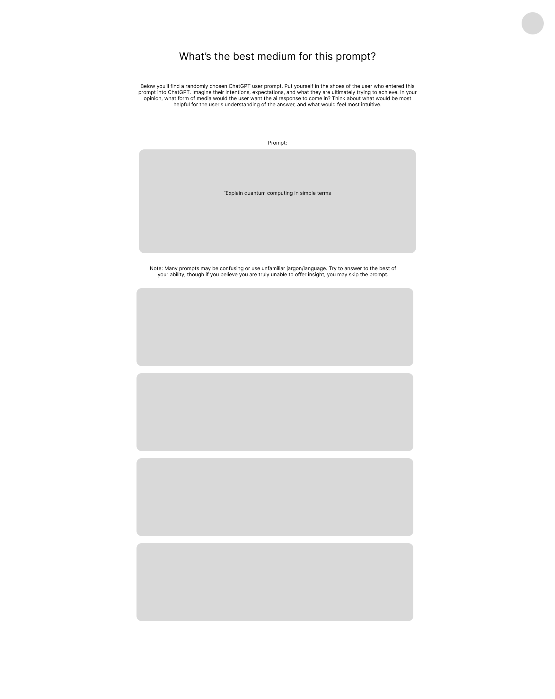
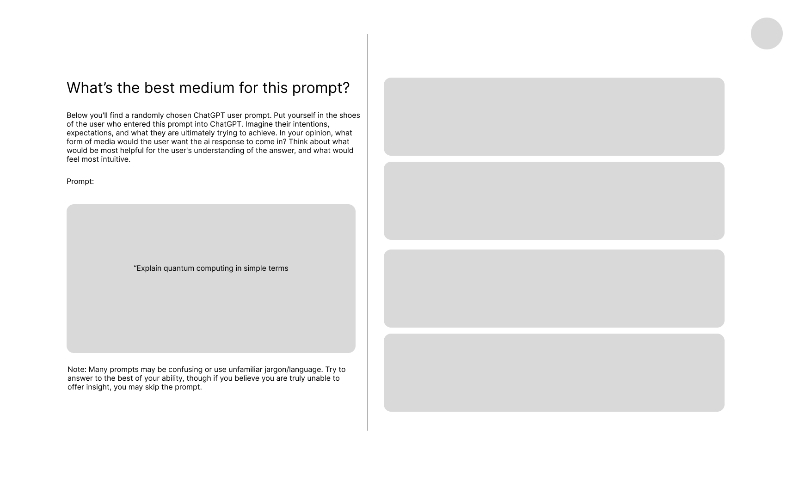
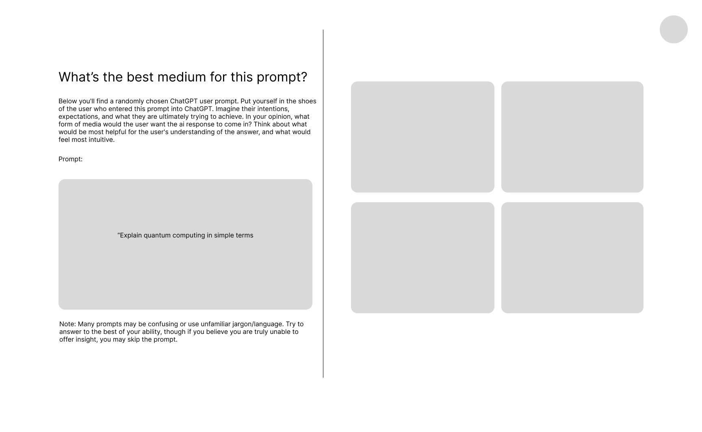
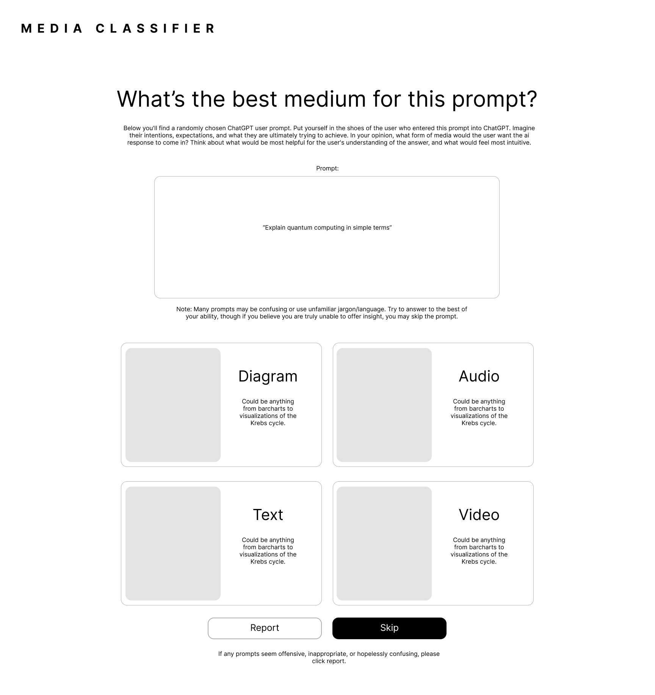

THE CONCEPT
Given the onset of AI, designers can't help but ask the question: what will interfaces look like now?
Web and app interfaces, since their creation, have pretty much always played by the same rules of rigidity. Designers would try to understand what a general user would prefer and offer these options to everyone. However, with AI, interfaces have the potential of becoming much more personalized, streamlined, and centralized.
The issue of communication from human to computer has been almost nullified through AI chatbots and their incredible natural language processing capabilities, as computers are now able to speak the language of people. However, communication from computer to human has a lot more unrealized potential. We've all experimented with text-based AI chatbots like ChatGPT and Claude. But text is not the only form of communication we have. Multimedia supplements have been shown time and time again to improve understanding and decrease cognitive load, both through research as well as theories such as Richard Mayer's widely accepted multimedia principles (2002).
I imagine future communication among AI and humans will involve human text input and multimedia AI output. In this exploration, I focus on building a classifier model that will be able to predict user preferences for different media output given a prompt.
OUR DATA
The plan was to obtain existing AI chatbot user prompt data and manually label what sort of media would work best for each prompt (ie. text, audio, video). The data I obtained is the WildChat dataset, which consists of 1 million ChatGPT prompts and responses from users all across the world (Deng, 2024). I extracted just the English prompts for this project.
MEDIA BALLOT
Manually labelling each prompt was problematic. "What media would work best for each prompt" is a pretty subjective question, and would require multiple user inputs to confirm some sort of general consensus for each prompt and its label. The solution was a publicly available page where anyone could have access to and label randomly chosen prompts. Each prompt would get to be labelled 3 times by users before being removed from the pool. Like in a voting process, the majority label "wins" and acts as the final label for that prompt to be put in the dataset. I've named it "Media Ballot".
FEATURES
- Clean UI and directions so that users are more likely to stay on the page and understand their task
- Thorough explanations of process and purpose to ensure transparency and respect for persons
- No sign-in process to ensure anonymity and lessen bias
- Total of around 2500 prompts
WIREFRAMES




LIVE DATASET
MODEL
If we do manage to accomplish labelling for all 2500 prompts, the next step would be to put the data in a DistilBERT model to actually create the classifier. For smaller datasets, I plan to first use Naive Bayes, then Logistic Regression as a starting point.
LIMITATIONS AND ISSUES
There is definitely potential bias in the original WildChat dataset. It was obtained through two ChatGPT models put on HuggingFace, where users would give their consent for their prompts and information to be collected. Since it is voluntary and on a platform with a very specific user base, it is a form of survey, which is always biased. Biased training data results in a biased model.
Many prompts are confusing, and the original intentions behind them are unclear, resulting in users of the Media Ballot to be unable to decide what media to assign the prompt. A more selective dataset with specific, information based queries would fix this problem.
I also acknowledge that the categories Text, Audio, Video, and Diagrams are very broad. For example within Text, we can have essays, lists, summaries, etc. In the future I'd consider multimedia options such as infographics, slidedecks, etc. The Media Ballot is only a starting point that may not effectively capture this nuance.
Also, having people tell you what media they would prefer best isn't a very scientific method because it's subjective and I think a lot of times people don't know what they like most. A more objective measure of types of media lessening cognitive load would be to conduct an experiment measuring participant reaction time/comprehension given a prompt and the response in a certain form of media.
Finally, of course, I didn't create the actul model because I need many more labelled data points than what I have now (anything over 200). This critical point exposes this project as just an exploration outlining how one might go about creating this classifier model. Future steps include creating the classifier model and using it to build a more complex AI that utilizes the classifications to generate actual outputs.